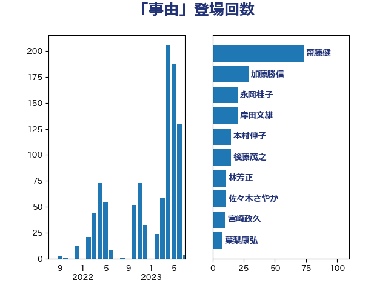

単語「事由」

| 齋藤健 | 自由民主党 | 73 回 |
| 加藤勝信 | 自由民主党 | 29 回 |
| 永岡桂子 | 自由民主党 | 20 回 |
| 岸田文雄 | 自由民主党 | 20 回 |
| 本村伸子 | 日本共産党 | 15 回 |
| 後藤茂之 | 自由民主党 | 15 回 |
| 林芳正 | 自由民主党 | 11 回 |
| 佐々木さやか | 公明党 | 11 回 |
| 宮崎政久 | 自由民主党 | 10 回 |
| 葉梨康弘 | 自由民主党 | 8 回 |
| 宮本徹 | 日本共産党 | 8 回 |
| 上野賢一郎 | 自由民主党 | 8 回 |
| 鈴木俊一 | 自由民主党 | 7 回 |
| 西村康稔 | 自由民主党 | 7 回 |
| 三木圭恵 | 日本維新の会 | 7 回 |
| 藤井一博 | 自由民主党 | 6 回 |
| 簗和生 | 自由民主党 | 6 回 |
| 福島みずほ | 社会民主党 | 6 回 |
| 牧山ひろえ | 立憲民主党 | 6 回 |
| 浜田聡 | NHK党 | 6 回 |
| 市村浩一郎 | 日本維新の会 | 6 回 |
| 吉田統彦 | 立憲民主党 | 6 回 |
| 古川禎久 | 自由民主党 | 6 回 |
| 伊佐進一 | 公明党 | 6 回 |
| 仁比聡平 | 日本共産党 | 6 回 |
| 階猛 | 立憲民主党 | 5 回 |
| 金子恭之 | 自由民主党 | 5 回 |
| 萩生田光一 | 自由民主党 | 5 回 |
| 緒方林太郎 | 無所属 | 5 回 |
| 田村まみ | 国民民主党 | 5 回 |
| 田島麻衣子 | 立憲民主党 | 5 回 |
| 浅野哲 | 国民民主党 | 5 回 |
| 松本剛明 | 自由民主党 | 5 回 |
| 川田龍平 | 立憲民主党 | 5 回 |
| 川合孝典 | 国民民主党 | 5 回 |
| 寺田稔 | 自由民主党 | 5 回 |
| 安江伸夫 | 公明党 | 5 回 |
| 鎌田さゆり | 立憲民主党 | 4 回 |
| 鈴木庸介 | 立憲民主党 | 4 回 |
| 野田聖子 | 自由民主党 | 4 回 |
| 遠藤良太 | 日本維新の会 | 4 回 |
| 磯崎仁彦 | 自由民主党 | 4 回 |
| 石橋通宏 | 立憲民主党 | 4 回 |
| 渡辺周 | 立憲民主党 | 4 回 |
| 松野博一 | 自由民主党 | 4 回 |
| 岩渕友 | 日本共産党 | 4 回 |
| 山本香苗 | 公明党 | 4 回 |
| 高良鉄美 | 無所属 | 3 回 |
| 阿部弘樹 | 日本維新の会 | 3 回 |
| 米山隆一 | 立憲民主党 | 3 回 |
| 石川大我 | 立憲民主党 | 3 回 |
| 熊田裕通 | 自由民主党 | 3 回 |
| 清水真人 | 自由民主党 | 3 回 |
| 平林晃 | 公明党 | 3 回 |
| 岸真紀子 | 立憲民主党 | 3 回 |
| 山添拓 | 日本共産党 | 3 回 |
| 天畠大輔 | れいわ新選組 | 3 回 |
| 大島九州男 | れいわ新選組 | 3 回 |
| 大口善徳 | 公明党 | 3 回 |
| 國重徹 | 公明党 | 3 回 |
| 勝目康 | 自由民主党 | 3 回 |
| 前原誠司 | 国民民主党 | 3 回 |
| 井上哲士 | 日本共産党 | 3 回 |
| 中島克仁 | 立憲民主党 | 3 回 |
| 青柳仁士 | 日本維新の会 | 2 回 |
| 門山宏哲 | 自由民主党 | 2 回 |
| 長妻昭 | 立憲民主党 | 2 回 |
| 鈴木英敬 | 自由民主党 | 2 回 |
| 赤木正幸 | 日本維新の会 | 2 回 |
| 谷合正明 | 公明党 | 2 回 |
| 礒崎哲史 | 国民民主党 | 2 回 |
| 石川博崇 | 公明党 | 2 回 |
| 田中昌史 | 自由民主党 | 2 回 |
| 田中健 | 国民民主党 | 2 回 |
| 漆間譲司 | 日本維新の会 | 2 回 |
| 河野太郎 | 自由民主党 | 2 回 |
| 柳ヶ瀬裕文 | 日本維新の会 | 2 回 |
| 東徹 | 日本維新の会 | 2 回 |
| 東国幹 | 自由民主党 | 2 回 |
| 広瀬めぐみ | 自由民主党 | 2 回 |
| 平山佐知子 | 無所属 | 2 回 |
| 山本左近 | 自由民主党 | 2 回 |
| 小沢雅仁 | 立憲民主党 | 2 回 |
| 宮本岳志 | 日本共産党 | 2 回 |
| 大西健介 | 立憲民主党 | 2 回 |
| 大塚耕平 | 国民民主党 | 2 回 |
| 塩村あやか | 立憲民主党 | 2 回 |
| 和田政宗 | 自由民主党 | 2 回 |
| 古庄玄知 | 自由民主党 | 2 回 |
| 倉林明子 | 日本共産党 | 2 回 |
| 住吉寛紀 | 日本維新の会 | 2 回 |
| 井坂信彦 | 立憲民主党 | 2 回 |
| 中川康洋 | 公明党 | 2 回 |
| 高橋英明 | 日本維新の会 | 1 回 |
| 須藤元気 | 無所属 | 1 回 |
| 音喜多駿 | 日本維新の会 | 1 回 |
| 鈴木貴子 | 自由民主党 | 1 回 |
| 金子道仁 | 日本維新の会 | 1 回 |
| 近藤昭一 | 立憲民主党 | 1 回 |
| 藤川政人 | 自由民主党 | 1 回 |
| 藤原崇 | 自由民主党 | 1 回 |
| 芳賀道也 | 国民民主党 | 1 回 |
| 羽田次郎 | 立憲民主党 | 1 回 |
| 笠井亮 | 日本共産党 | 1 回 |
| 秋本真利 | 無所属 | 1 回 |
| 石川香織 | 立憲民主党 | 1 回 |
| 石井苗子 | 日本維新の会 | 1 回 |
| 石井拓 | 自由民主党 | 1 回 |
| 田村智子 | 日本共産党 | 1 回 |
| 田所嘉徳 | 自由民主党 | 1 回 |
| 牧島かれん | 自由民主党 | 1 回 |
| 片山大介 | 日本維新の会 | 1 回 |
| 浮島智子 | 公明党 | 1 回 |
| 津島淳 | 自由民主党 | 1 回 |
| 池下卓 | 日本維新の会 | 1 回 |
| 森山浩行 | 立憲民主党 | 1 回 |
| 梅村聡 | 日本維新の会 | 1 回 |
| 柚木道義 | 立憲民主党 | 1 回 |
| 本庄知史 | 立憲民主党 | 1 回 |
| 末松義規 | 立憲民主党 | 1 回 |
| 末松信介 | 自由民主党 | 1 回 |
| 新妻秀規 | 公明党 | 1 回 |
| 斎藤アレックス | 国民民主党 | 1 回 |
| 掘井健智 | 日本維新の会 | 1 回 |
| 打越さく良 | 立憲民主党 | 1 回 |
| 志位和夫 | 日本共産党 | 1 回 |
| 後藤祐一 | 立憲民主党 | 1 回 |
| 岩谷良平 | 日本維新の会 | 1 回 |
| 山田宏 | 自由民主党 | 1 回 |
| 山田太郎 | 自由民主党 | 1 回 |
| 山下貴司 | 自由民主党 | 1 回 |
| 小野泰輔 | 日本維新の会 | 1 回 |
| 宮本周司 | 自由民主党 | 1 回 |
| 守島正 | 日本維新の会 | 1 回 |
| 奥野総一郎 | 立憲民主党 | 1 回 |
| 奥下剛光 | 日本維新の会 | 1 回 |
| 塩田博昭 | 公明党 | 1 回 |
| 和田義明 | 自由民主党 | 1 回 |
| 吉田宣弘 | 公明党 | 1 回 |
| 吉田久美子 | 公明党 | 1 回 |
| 吉川ゆうみ | 自由民主党 | 1 回 |
| 古賀千景 | 立憲民主党 | 1 回 |
| 古屋範子 | 公明党 | 1 回 |
| 友納理緒 | 自由民主党 | 1 回 |
| 北側一雄 | 公明党 | 1 回 |
| 勝部賢志 | 立憲民主党 | 1 回 |
| 加田裕之 | 自由民主党 | 1 回 |
| 前川清成 | 日本維新の会 | 1 回 |
| 佐藤英道 | 公明党 | 1 回 |
| 伊藤岳 | 日本共産党 | 1 回 |
| 伊藤孝江 | 公明党 | 1 回 |
| 井林辰憲 | 自由民主党 | 1 回 |
| 井上貴博 | 自由民主党 | 1 回 |
| 串田誠一 | 日本維新の会 | 1 回 |
| 三浦信祐 | 公明党 | 1 回 |
| 三ッ林裕巳 | 自由民主党 | 1 回 |
| 一谷勇一郎 | 日本維新の会 | 1 回 |
| あかま二郎 | 自由民主党 | 1 回 |